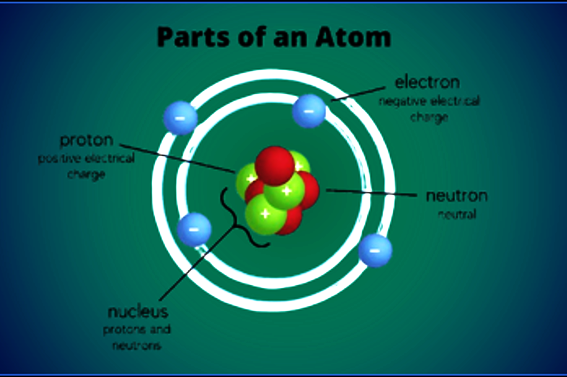
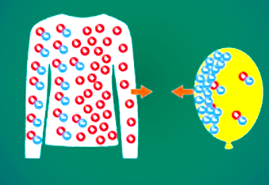
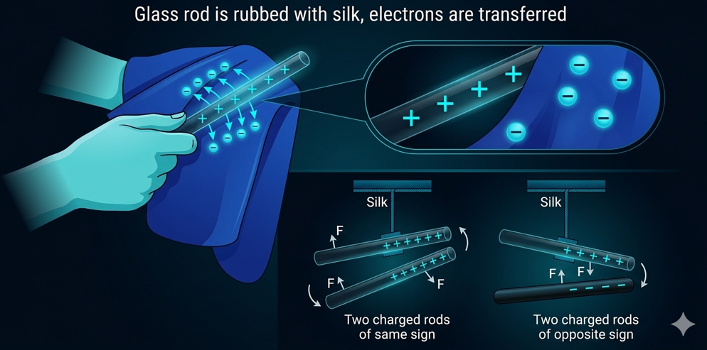

Static electricity is the imbalance of electric charges within or on the surface of a material. Unlike current electricity, which involves a continuous flow of electrons, static electricity is 'static' because the charges remain in one area until they can move away via an electric current or electrical discharge. This page details the fundamental principles governing this phenomenon.
1. The Particle Level
The foundation of electricity lies within the structure of the atom. All matter is composed of atoms, which contain three primary subatomic particles:
- Protons: Located in the nucleus, carrying a fundamental positive (+) charge.
- Neutrons: Located in the nucleus, carrying no charge (neutral).
- Electrons: Orbiting the nucleus in specific energy shells, carrying a fundamental negative (-) charge.
The key to static electricity is that electrons are mobile. While protons are tightly bound within the the center of the atom, electrons, especially those in the outermost shells, can be gained or lost by an atom.
When an atom has an equal number of protons and electrons, the positive and negative charges cancel each other out, making the atom electrically neutral. Static charge only occurs when this balance is disrupted.
- A Negative Charge accumulates on an object when it gains extra electrons.
- A Positive Charge accumulates on an object when it loses electrons. (It does not gain protons; it simply has a deficit of negative charge).
To visualize this foundation, we see the simple Bohr model of the atom illustrating the central nucleus (protons and neutrons) and the surrounding mobile electron cloud.

2. The Mechanics of Charging
Charges do not appear spontaneously; they are transferred from one material to another. This imbalance usually happens through physical interaction. While there are three main methods (Friction, Induction, and Conduction), the most common starting point for static electricity is friction.
Charging by Contact (The Triboelectric Effect)
This is the process of rubbing two different materials together. This physical contact allows the outermost electrons of the surface atoms to move. The 'how' is defined by a material property called electron affinity. Different materials hold onto their electrons with varying degrees of strength.
When two materials rub, the material with the higher electron affinity will pull electrons off the material with the lower electron affinity.
Example: Rubbing a balloon with wool.
- Wool has a low electron affinity; it holds its outer electrons loosely.
- Rubber (Balloon) has a higher electron affinity relative to glass.
- As they rub, electrons are physically scraped off the glass and transfer to the silk. (Note: This example combines balloon/wool and glass/silk concepts to illustrate the transfer.)
- The glass (or object losing electrons), having lost electrons, is now positively charged.
- The silk (or object gaining electrons), having gained those same electrons, is now negatively charged.

The Law of Conservation of Charge: The total charge of the isolated system remains constant during this process.
3. Electrostatic Interactions
Once objects have accumulated static charge (one positive, one negative), they begin to exert forces on each other. This is the Fundamental Law of Electrostatics:
Like charges repel
Two objects with the same type of charge (e.g., both negative) will exert a repulsive force, pushing each other away.
Opposite charges attract
Two objects with different charges (one positive, one negative) will exert an attractive force, pulling each other together.

Neutral objects do not normally interact electrostatically with each other, but a charged object can attract a neutral object through polarization (shifting the electron cloud within the neutral object).
4. Grounding and Discharge
Static electricity is temporary. Materials want to return to a neutral state. This occurs through discharge.
- Insulators (like rubber or glass) are poor conductors and can hold a static charge for a long time because electrons cannot easily move through them.
- Conductors (like metals) allow electrons to flow easily. If a charged conductor touches a large, neutral reservoir (like the Earth, or a large metal structure), the excess charge will immediately flow out (or electrons flow in) until the object is neutralized. This process is called Grounding.
⚡ Static Discharge
Static Discharge is the rapid, often spectacular transfer of electrons. This happens when the electric field built up by the static charge becomes strong enough to break down the insulating properties of the surrounding air, ionizing it and creating a conductive path. We experience this on a small scale as a spark when touching a doorknob, and on a massive scale as lightning.
Finished studying this topic?
Mark it as completed to unlock the next level in your Physics journey!